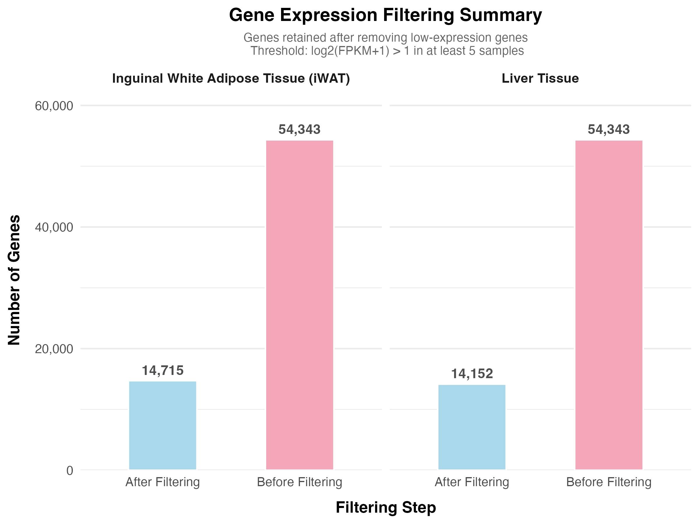
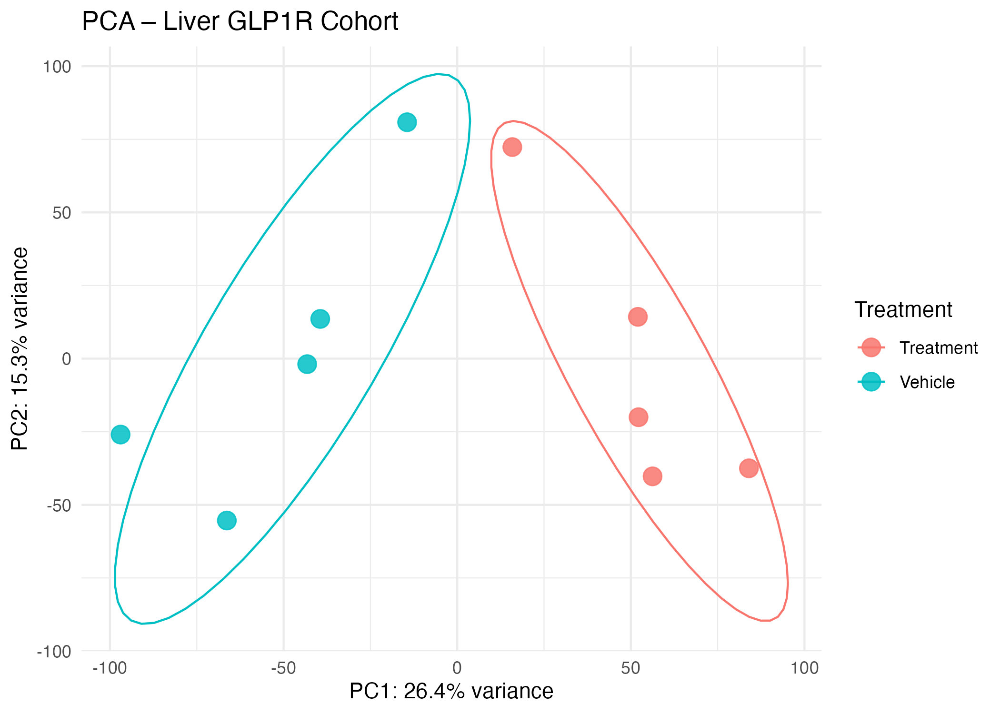
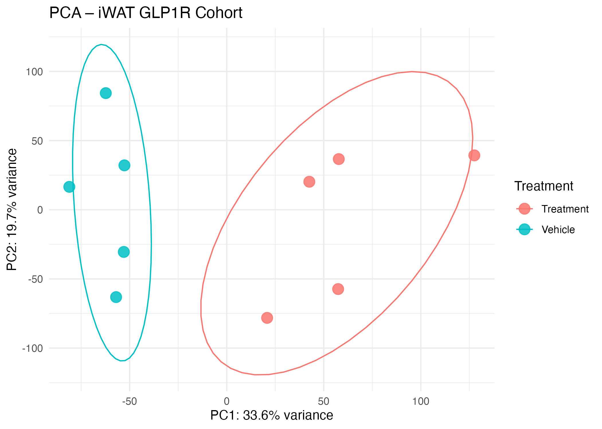
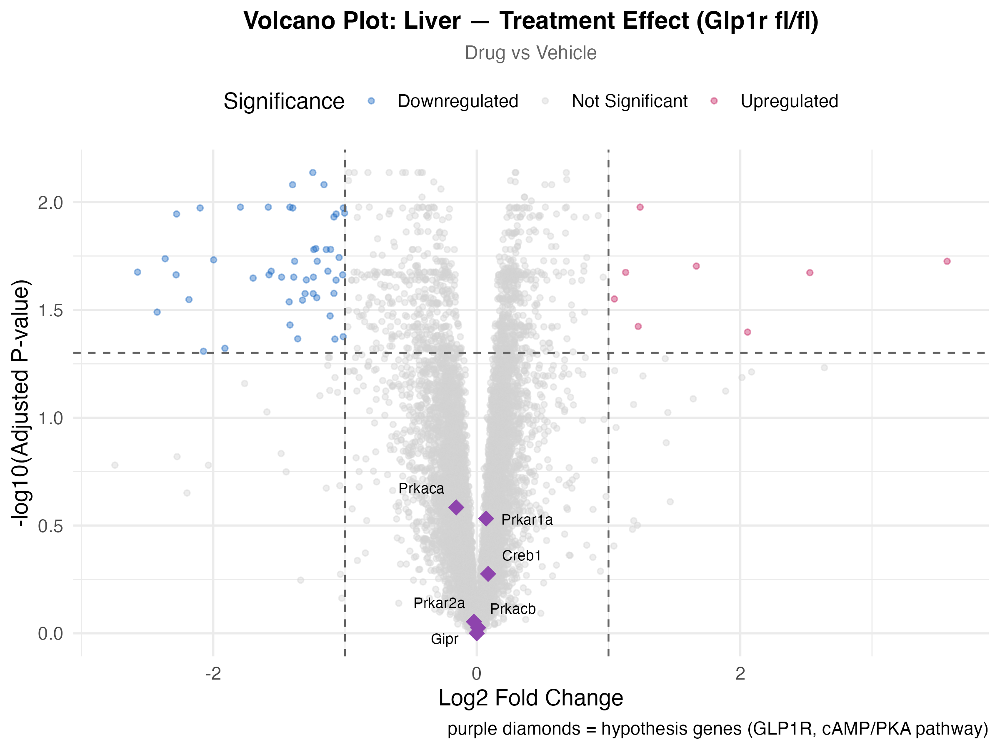
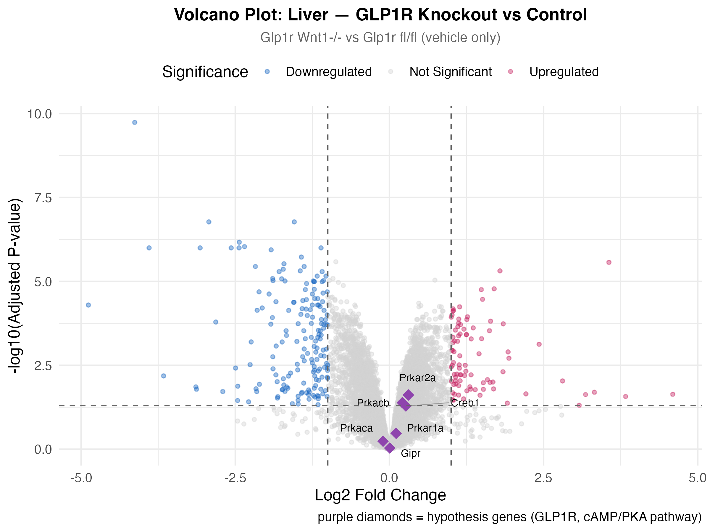
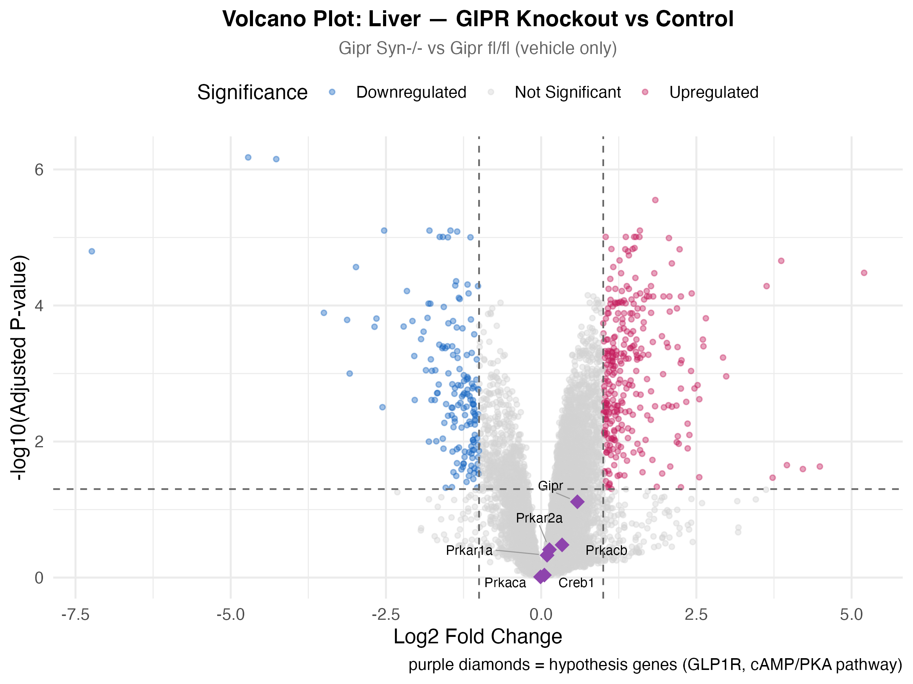
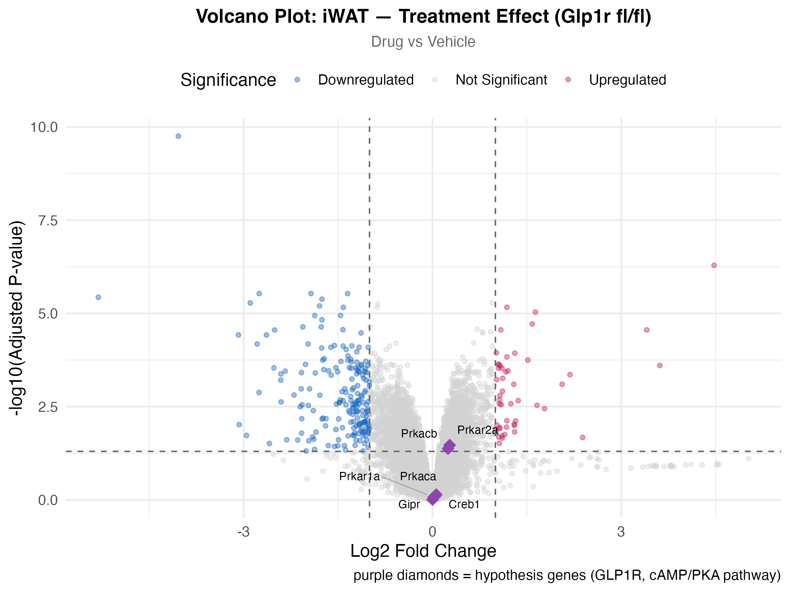
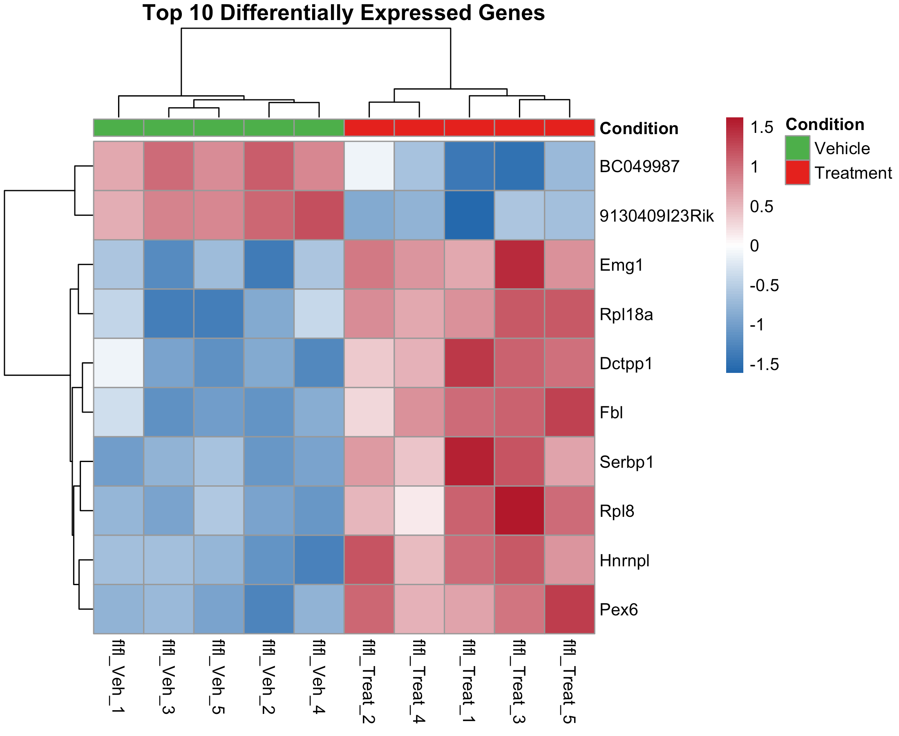
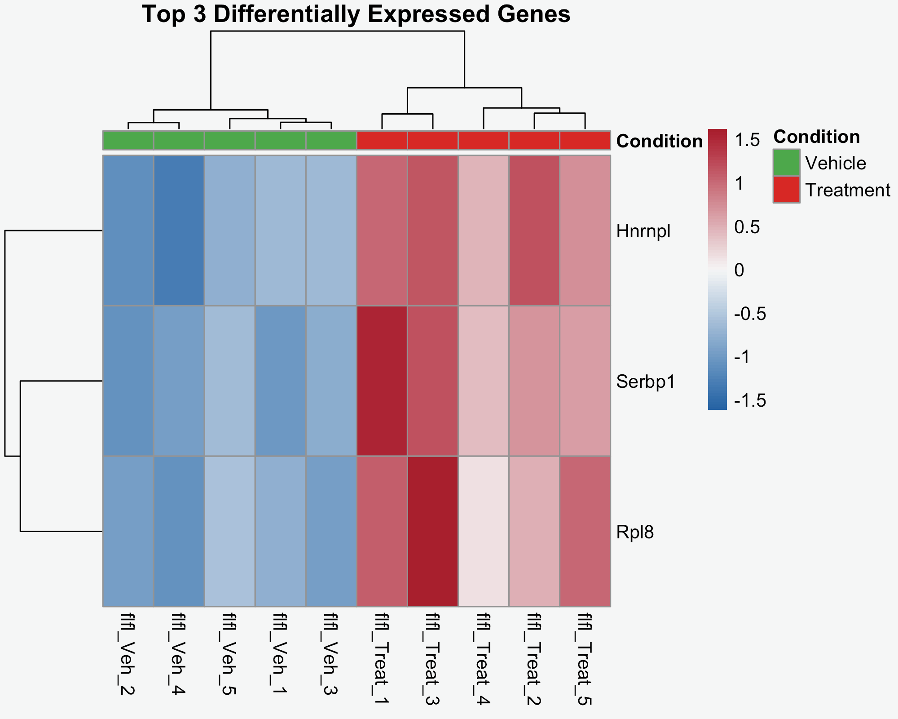

Results
Overview
We evaluated gene expression changes across liver and adipose tissue to understand GLP-1R and GIPR signaling effects. Our analysis revealed tissue-specific responses, unexpected GIPR dominance, and modest cAMP/PKA pathway activation.
Gene Expression Filtering
Before conducting differential expression analysis, we filtered out low-expression genes to improve statistical reliability and reduce noise.

The filtering step removed ~40,000 low-expression genes, keeping only those with robust, detectable expression. This improves the reliability of differential expression testing and reduces false discovery rates.
Principal Component Analysis
We performed PCA to validate data quality and assess whether treatment drove global gene expression patterns.
Liver Tissue

Treatment samples cluster tightly in the positive PC1 space, while vehicle controls occupy the negative space. No obvious outliers are present, confirming consistent biological replicates.
Adipose Tissue (iWAT)

The increased variance explained by PC1 in adipose tissue (39.6% vs 26.4% in liver) indicates that treatment has a more dominant effect on global gene expression in this tissue.
Differential Expression Analysis
We performed four differential expression comparisons using the Limma package to identify genes significantly altered by treatment or receptor knockout.
Liver: Drug Treatment Effect

Key findings:
- 57 differentially expressed genes (8 up, 49 down)
- Modest overall response — most genes cluster near zero fold change
- cAMP/PKA pathway genes not significant — hypothesis genes (purple diamonds) fall below the significance threshold
- Interpretation: Liver shows weak transcriptional activation in response to GLP-1 agonist treatment
Liver: GLP-1R Knockout vs Control

Key findings:
- 260 differentially expressed genes (87 up, 173 down)
- Stronger effect than drug treatment — removing the receptor causes more changes than activating it
- cAMP/PKA genes at borderline significance — suggesting pathway involvement when receptor is absent
- Interpretation: GLP-1R deletion has system-level effects beyond direct receptor activation
Liver: GIPR Knockout vs Control

Key findings:
- 460 differentially expressed genes (299 up, 161 down) — largest effect observed
- Strong global transcriptional impact — nearly double the GLP-1R knockout effect
- Hypothesis genes remain non-significant — GIPR affects genes outside our predicted pathway
- Interpretation: GIPR plays an unexpectedly major regulatory role in liver gene expression through CNS-mediated pathways
Adipose Tissue: Drug Treatment Effect

Key findings:
- 241 differentially expressed genes (49 up, 192 down)
- Stronger response than liver — 4-fold more genes affected compared to liver treatment
- cAMP/PKA genes near significance — closer to threshold than in liver
- Interpretation: GLP-1 signaling is tissue-specific, with adipose tissue showing enhanced sensitivity
Gene Expression Patterns
Heatmaps reveal coordinated expression changes across the top differentially expressed genes.
Top 10 Differentially Expressed Genes

The dendrogram shows perfect separation between treatment and vehicle groups, confirming that the top differentially expressed genes are consistent across biological replicates.
Top 3 Differentially Expressed Genes

Summary of Findings
Our comprehensive analysis across multiple comparisons revealed:
- Data Quality Validated — PCA plots confirmed clean clustering by treatment with no outliers
- Modest Liver Treatment Effect — Only 57 genes changed with drug treatment in liver
- Tissue-Specific Responses — Adipose tissue (241 genes) responded 4× more strongly than liver (57 genes)
- Receptor Knockout > Drug Treatment — Deleting receptors caused more dramatic changes than activating them
- GIPR Dominance — GIPR knockout produced the largest transcriptional response (460 genes)
- cAMP/PKA Pathway Subtle — Hypothesis genes showed trends but did not reach statistical significance
These results suggest that GLP-1R signaling operates through tissue-specific mechanisms, with GIPR playing an unexpectedly central role in CNS-mediated regulation of peripheral metabolism. The modest cAMP/PKA pathway activation indicates that GLP-1 drugs may work through alternative or redundant signaling cascades.
Biological Interpretation: What the Top Genes Tell Us
While our hypothesis focused on cAMP/PKA pathway genes, the most significantly changed genes reveal important insights into how GLP-1 treatment actually remodels cellular metabolism.
Understanding the Top Differentially Expressed Genes
The heatmaps highlight genes with the strongest, most consistent changes across all samples. Rather than seeing our predicted cAMP/PKA genes at the top, we found genes involved in fundamental metabolic processes:
Protein Synthesis Machinery (Rpl8, Rpl18a, Fbl, Emg1)
Multiple ribosomal proteins were upregulated, indicating that treated cells are ramping up their capacity to make new proteins. This suggests GLP-1 triggers broad metabolic reprogramming that requires building new cellular machinery rather than just activating existing pathways.
Metabolic Master Regulators (Hnmpl)
HNF1 homeobox-like protein functions as a master switch controlling liver-specific metabolic gene networks. Its appearance as a top hit indicates GLP-1 works through hierarchical regulatory networks—activating master regulators that coordinate expression of many downstream genes simultaneously.
RNA Processing & Translation Control (Serbp1)
SERPINE1 mRNA binding protein regulates which messenger RNAs get translated into proteins. Changes in this gene suggest GLP-1 affects not just gene transcription, but also post-transcriptional control of which proteins actually get made.
Lipid Metabolism (Pex6)
Peroxisomal biogenesis factor 6 builds the organelles responsible for breaking down fatty acids. Its upregulation directly connects to the weight loss effects of GLP-1 drugs by increasing cellular fat-burning capacity.
Why cAMP/PKA Genes Weren’t Significant
This apparent discrepancy actually reveals an important biological principle:
The cAMP/PKA pathway primarily works through rapid protein modification, not transcriptional changes. When GLP-1 binds its receptor:
- Immediate effect (seconds-minutes): cAMP rises, activating PKA proteins that are already present in the cell
- PKA phosphorylates existing proteins — changing their activity without requiring new gene expression
- Downstream transcriptional changes (hours): Activated proteins then regulate other genes
Our RNA-seq experiment captures step 3 — the broad metabolic remodeling orchestrated by activated cAMP/PKA proteins, not the initial pathway activation itself. This explains why we see modest changes in PRKACA and PRKACB (the genes encoding PKA) but dramatic changes in their downstream targets like ribosomal proteins and metabolic regulators.
Connecting Molecular Findings to Clinical Effects
These gene expression patterns help explain the therapeutic benefits of GLP-1 drugs:
- Increased ribosomal proteins → Enhanced capacity for producing metabolic enzymes and receptors
- Activation of metabolic master regulators → Coordinated reprogramming of glucose and lipid handling pathways
- Upregulation of peroxisomal genes → Increased fat oxidation contributing to sustained weight loss
- Tissue-specific responses → Adipose tissue shows 4× stronger transcriptional changes than liver, consistent with tissue-selective drug effects observed clinically
Revised Understanding of GLP-1 Mechanism
Our results suggest GLP-1 receptor agonists work not by simply activating one linear signaling pathway, but by triggering coordinated metabolic reprogramming across multiple regulatory networks. The combination of:
- Subtle cAMP/PKA transcriptional changes (because the pathway works at the protein level)
- Strong downstream effector gene changes (ribosomal proteins, metabolic regulators, lipid metabolism genes)
- Tissue-specific response magnitudes (stronger in adipose than liver)
…indicates that the cAMP/PKA pathway functions as a signal amplifier — small initial molecular changes cascade into large-scale metabolic remodeling. This multi-level regulation may explain why GLP-1 drugs have such broad therapeutic effects on glucose control, weight loss, and cardiovascular health.
Implications for Future Research
These findings raise several important questions:
- Protein-level validation: Do protein levels and phosphorylation states of cAMP/PKA pathway components change even when their gene expression doesn’t?
- Time-course dynamics: How do these transcriptional changes evolve over hours to days after treatment?
- Functional consequences: Do the observed changes in ribosomal and metabolic genes translate into measurable differences in protein synthesis rates and metabolic flux?
- GIPR’s unexpected role: Why does GIPR knockout cause more dramatic transcriptional changes than GLP-1R knockout, and what does this mean for dual agonist drug development?
Our hypothesis was not disproven—it was refined. We learned that GLP-1 signaling works through layers of regulation, with rapid protein-level changes driving slower but more extensive transcriptional remodeling of cellular metabolism.